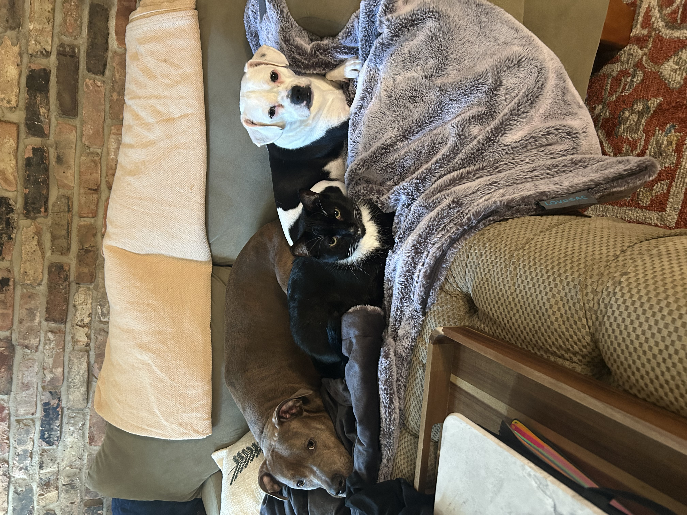

Here are some of my hobbies:
Video Games!

Teamfight Tactics is a turn-based auto battler...
Teamfight Tactics is a turn-based auto battler...
Teamfight Tactics is a turn-based auto battler computer game. An auto battler, also known as auto chess, is a subgenre of strategy video games that feature chess-like elements where players place characters on a grid-shaped battlefield during a preparation phase, who then fight the opposing team's characters without any further direct input from the player. The aim of the game is to be the last one left alive from 8 players, with each player starting with 100 health points. It is split into multiple stages, with 5 rounds each stage. Each round you battle against a single opponent. The board is similar to that of a chess board, upon which you create your ‘team’. Like chess, you have multiple pieces. The number of pieces, or characters you have on your board at once corresponds to your level, starting at level 3 and ending at 9. Each character has a trait that can synergise with other traits in the game. Like in Poker, if you have 5 hearts you have a strong hand. The objective is to build a team of characters that work well with each other. A successful team will utilise the traits that work best with one another and that successfully counter the opposition. To obtain these characters you must purchase them from the ‘shop’ that shows a limited number of options, but refreshes these options each round for free.
I have four pets, 2 cats, The tuxedo cat name is Bruce and the Tabby cat is named Nori.I've also got two dogs, the pittbull is named Bonnie and Cece is a French-BullWeiner.
This is my tabby cat Nori! She loves to sit in the window and watch birds. She is very dramatic and demands attention constantly.
| Restaurant name | Type of Food | Location | Website |
|---|---|---|---|
| Khue's Kitchen | Vietnamese | Minneapolis, MN | Khue's Kitchen |
| Thai and More | Thai | New Brighton, MN | Thai and More |
| Diane's Place | Hmong | Minneapolis, MN | Diane's Place |
| Minari | East Asian Cuisine | Minneapolis, MN | Minari |